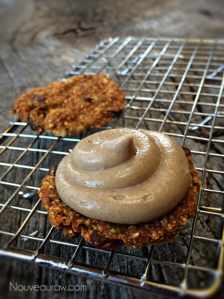

Carrot Cake Sandwich Cookies with Pumpkin Spice Frosting
~ raw, vegan, gluten-free ~
I love, love, love carrot cake. My dear friend, Elaine, back in Alaska, used to make the most amazing carrot cake ever! Every once in a while I still get such a strong craving for that delightful dessert. I think one of the reasons why I love carrot cake so much is that it’s not overly sweet, nor is the frosting that is usually paired with it.
So in honor of my dear friend, I created these mini carrot cake sandwich cookies. With each little bite, I am embraced with the feeling of her love and hugs. I hope you enjoy them too!
Before I let you go, I would like to run over a few of the ingredients that I used in this recipe. For starters, I used raw coconut flour. This isn’t the type of raw coconut flour that you buy in the stores. It is made from fresh ground shredded coconut. I provided a link below for you as to how to make it yourself. I highly recommend that you don’t use the store-bought version because it is too drying on the cookie and it will suck all the moisture out.
I also used a small amount of liquid stevia. This is clearly optional on your behalf. I didn’t want to add any further sweetener to the cookie, I just wanted to “brighten” up the taste. I provided a link to the brand that I solely use. It doesn’t have a bitter after taste like most.
Lastly, I want to touch base on the psyllium husks and Irish moss. I have made the cookie using one or the other and they came out great. They both act as a binder and give the cookie that cake-like texture.
I should also mention that the frosting I created for this recipe doesn’t firm up hard. You will want to keep the cookies stored in the fridge when you are not eating them. Ok… off you go… enjoy!
Ingredients:
Yields 26 cookies (2 1/2 Tbsp each) or 13 sandwich cookies
Cookie batter:
Frosting: yields 3 cups
- 2 cups raw cashews, soaked 2+ hours
- 1/2 cup maple syrup
- 1 Tbsp vanilla extract
- 1/2 tsp liquid stevia
- 1 Tbsp pumpkin pie spice
- 1/8 tsp sea salt
- 3/4 cup raw cold-pressed coconut oil, melted
- 2 Tbsp sunflower lecithin, powdered or liquid
Preparation:
Cookie batter:
- In the food processor shred the carrots.
- Add the apple, coconut flour, cinnamon, nutmeg. salt, vanilla, stevia, dates, and psyllium. Process together until well mixed but don’t over-process.
- Hand mix in the raisins and walnuts.
- Using a 2 1/2 Tbsp cookie scoop, make cookie shapes and drop them on the mesh screen that comes along with your dehydrator.
- Dehydrate at 115 degrees (F) for 6 hrs. I recommend checking in on your cookies from time to time as different dehydrators work differently. You want the outside of the cookie to be firm but the inside a bit moister. If you over-dry them it will affect the texture making them really dry in your mouth.
- Once cooled, apply the frosting and store in an airtight container in the fridge. If possible wait to frost until ready to serve.
Frosting:
- Add to blender all ingredients except the coconut oil and lecithin. These will be added at the very end. Blend until the frosting is nice and creamy with no grittiness. You want to accomplish this prior to adding the coconut oil and lecithin.
- Now add in the coconut oil and lecithin, blend until smooth and creamy (3-5 minutes)
- While your blender is running, drizzle in the coconut oil and then slowly add the lecithin. Blend well but don’t over-process.
- Place in the fridge to firm up prior to frosting.
- Pipe the frosting on one cookie and place another cookie on top, gently press down. Roll the edges in shredded coconut.
- You will want to keep your frosted treat in the fridge up until serving.
- Frosting will last 5-7 days in the fridge. Do not freeze as it will change the consistency.

© AmieSue.com